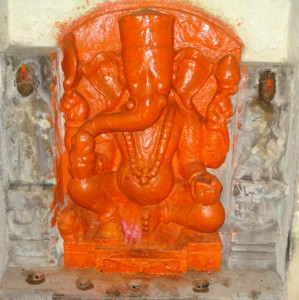

<?xml version="1.0" encoding="UTF-8"?><rss version="2.0"
	xmlns:content="http://purl.org/rss/1.0/modules/content/"
	xmlns:wfw="http://wellformedweb.org/CommentAPI/"
	xmlns:dc="http://purl.org/dc/elements/1.1/"
	xmlns:atom="http://www.w3.org/2005/Atom"
	xmlns:sy="http://purl.org/rss/1.0/modules/syndication/"
	xmlns:slash="http://purl.org/rss/1.0/modules/slash/"
	>

<channel>
	<title>Bhimchandi Vinayak &#8211; Varanasi Temples</title>
	<atom:link href="index.html" rel="self" type="application/rss+xml" />
	<link>../../../../index.html</link>
	<description>Temples of Varanasi as referred to in Kashi Khand</description>
	<lastBuildDate>Thu, 19 Jun 2025 05:16:46 +0000</lastBuildDate>
	<language>en-US</language>
	<sy:updatePeriod>hourly</sy:updatePeriod>
	<sy:updateFrequency>1</sy:updateFrequency>
	<generator>https://wordpress.org/?v=4.6.29</generator>
	<item>
		<title>BHIMCHANDI VINAYAK</title>
		<link>../../../../vinayak-temples/bhimchandi-vinayak-2/index.html</link>
		<pubDate>Sat, 08 May 2010 03:13:41 +0000</pubDate>
		<dc:creator><![CDATA[admin]]></dc:creator>
				<category><![CDATA[Bhimchandi Vinayak]]></category>
		<category><![CDATA[Vinayak Temples]]></category>
		<category><![CDATA[budheshwar mahadev]]></category>

		<guid isPermaLink="false">../../../../p=188.html</guid>
		<description><![CDATA[  Bhimchandi Vinayak is located at the outskirts of Varanasi in the Panchkosi route. Worshipping Bhimchandi Vinayak will remove all fears from the devotee’s mind. TYPES OF POOJA The place of worship is open practically throughout and devotees can perform pooja by themselves.]]></description>
				<content:encoded><![CDATA[<p style="text-align: center;"> </p>
<div id="attachment_1333" style="width: 309px" class="wp-caption aligncenter"><a href="../../../../assets/images/VINAYAK1-MISC.jpg"></a><p class="wp-caption-text">Bhimchandi Vinayak</p></div>
<p>Bhimchandi Vinayak is located at the outskirts of Varanasi in the Panchkosi route. Worshipping Bhimchandi Vinayak will remove all fears from the devotee’s mind.</p>
<h3>TYPES OF POOJA</h3>
<p>The place of worship is open practically throughout and devotees can perform pooja by themselves.</p>
]]></content:encoded>
			</item>
	</channel>
</rss>
